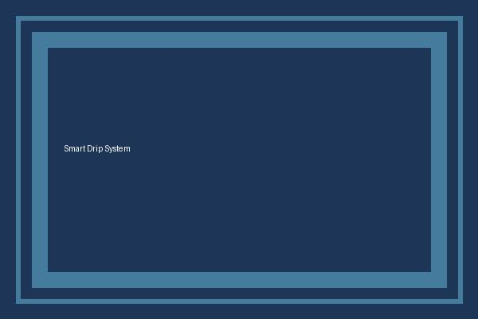
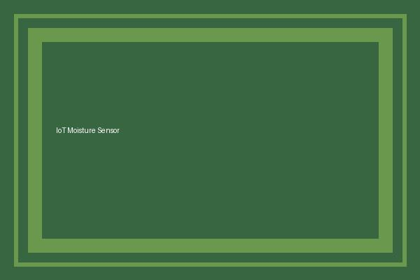
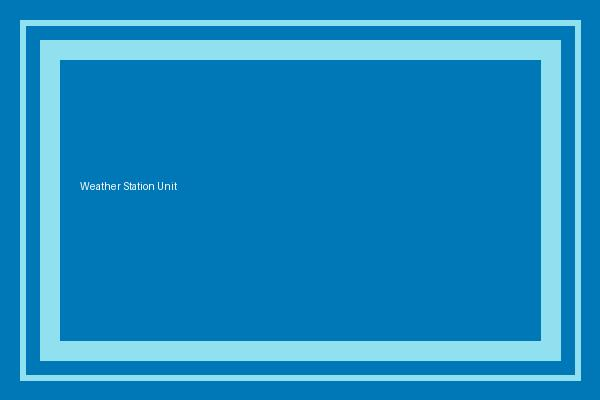

Current Crop Season: Kharif 2026
AI-based smart irrigation advisory for farmers, agronomists, and agricultural staff.
Welcome to the AI-Based Smart Irrigation Advisory Portal. This platform integrates continuous IoT soil-moisture sensor telemetry, local weather forecasts, and agronomic evapotranspiration models to deliver actionable water volume and scheduling advisories to farmers.
Featured Irrigation Advisories
Immediate Action
Plot A - Cane Early Tillering
Current Moisture: 24% (Below threshold of 30%). Drip run recommended for 45 mins.
View Plot Details →
Monitoring
Plot B - Vegetative Stage
Current Moisture: 38%. Forecast predicts overcast conditions. No irrigation required today.
View Plot Details →
Optimal
Plot C - Ripening Cane
Current Moisture: 55%. Field capacity is healthy. Drip line pressure test complete.
View Plot Details →
Precision Agriculture Image Gallery
Hover over any image to see dynamic scale transformation effects:

Automated Micro-Drip

IoT Capacitive Sensor

Micro-Weather Telemetry
Daily Irrigation Schedule & Water Quotas
Daily Plot Irrigation Allocation Matrix
| Plot ID |
Farmer Name |
Crop Stage |
Soil Moisture |
Duration |
Recommendation Status |
| AGR-101 |
Ravi Patil |
Vegetative |
28% |
35 min |
Approved |
| AGR-102 |
Anita Deshmukh |
Tillering |
34% |
20 min |
Hold |
| AGR-103 |
Sunil Rao |
Grand Growth |
26% |
45 min |
Approved |
| AGR-104 |
Meera Jadhav |
Ripening |
54% |
0 min |
Sufficient |
| Data refreshed every 60 minutes via Somaiya IoT Farm Station Node. |
 Agricultural Advisory Council • K. J. Somaiya Smart Farming
Agricultural Advisory Council • K. J. Somaiya Smart Farming